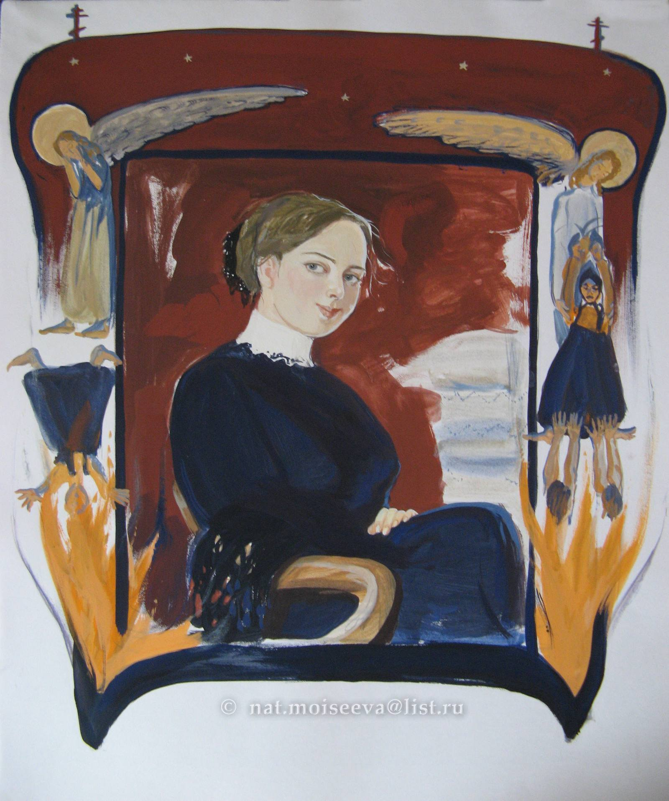
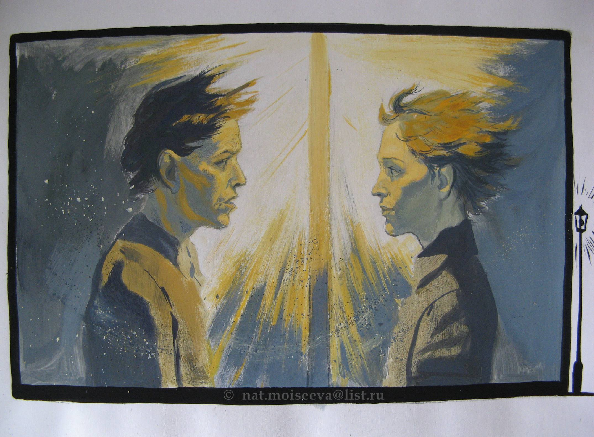

Book 11. A Book of Demons
- Chapter 1. At Grushenka's
- narrative and ideological function of Alesha: Alesha connects all the characters across the books of the novel.
Mitya: "For the wee one I'll go to Siberia" (569) a Kahoot/quiz quote.
Time: after the arrest 3 days passed and 5 months of Grushenka's illness
Grushenka becomes more attractive and resolute (563)
Grushenka: the lackey killed Fedor (568)
Grushenka visits Mitya in prison
money for the lawyer Fetyukovich (3k) and the doctor (2k): the insanity defense.
"as if" he killed (568)
evidence: Grigory insists the door was open (569)
Grushenka: a lot of tears in this chapter: true love.
secret between Ivan and Mitya.

Fig. 1. Grushenka.
artist Natalya Moiseeva (2000s)
- Chapter 2 The ailing little foot
Madame Khokhlakova
media frenzy around the murder, Rakitin is the author of rumors (577)
the name of town: Skotoprigonyevsk (Cattle-round-up-ville), the place of carnality (573) the narrator is ashamed to reveal the name
Ivan visits Lise (578)
- Chapter 3. Satanic girl
Liza: "I want disorder" (581).
Alesha visits Liza
She is sick – and inflicts suffering (= Underground man)
Tyrannizes people
She punishes herself, which is not the same thing as being strong and enduring suffering
She slams the door on her finger to avoid suffering (585)
talk of killing a child, Liza enjoying it (583)
dream about devils (583)
Ivan is another visitor of Liza: doubling (584)
- Chapter 4 A Hymn and a Secret
Two characters visit Mitya in jail: Rakitin and Ivan; both tempt him.
Rakitin (a socialist serpent): Dmitry is a victim, a child of social environment,
“Claude Bernard”—father of physiology; introduced experimental anatomical studies; scientific mehod starts
Rakitin: “People are nothing but a walking bio-chemical reaction”
NOT!
Why does Dmitry want to accept suffering? –
for everybody, for you (Hymn 589)
He becomes a Father Zosima person
He has experienced rebirth
Ivan’s plan (temptation) for Mitya
Dmitry is given freedom of choice, for which the GI accused Christ:
America or Siberia (it’s a tough one):
without Grushenka he is nothing
what if Grushenka does not go there;
what if they can’t get married; what if he forgets why he made this decision. Can’t have a certainty, a guarantee that she’ll be with him
He needs from Alesha recognition of his innocence
Mitya: "Well, go, love Ivan" (597). Mitya sends Alesha next to Ivan.
- Chapter 5. Not you! Not you!
Ivan: "If she's a child. I'm not her nanny" (600)
Alesha: "It was not you who killed father, not you! ... God has sent me to tell you that!" (601-602)
Ivan: "Alexei Fedorovich ... I'm breaking with you ... at this very crossroads" (602).

Fig. 2. Alesha and Ivan. Chapter 5. Not you!
artist Natalya Moiseeva (2000s)
- Chapter 6. Smerdyakov 1
first meeting Ivan and Smerdyakov
on the day of Ivan's return from Moscow
(it is a flashback in the novel)
Ivan does not love Mitya
Doctor: "exceptional" seizure (read miracle) (605)
Ivan knows Sm have been shamming on the day of the murder.
Ivan promises not to tell the police (609)
Eunuch's face (605)
German doctor: Sm writes French phrases in Cyrillic -- a proof of insanity, like Westernization of Russia, i guess.
- Chapter 7. Smerdyakov 2.0
a room full of cockroaches
confession to Katerina: "I am a murderer, too" (617)
Katerina Ivanovna helps him to feel not guilty by showing him Mitya letter promising to murder the father (618-19).
Katerina and Ivan romance: "enemies in love with each other" passionate toxic relationship (619)
escape plan by Ivan using blood money (620)
- Chapter 8 Smerdiakov 3.0